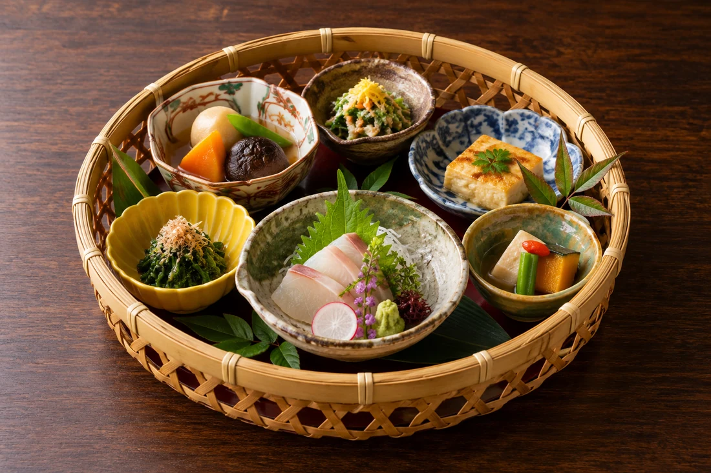
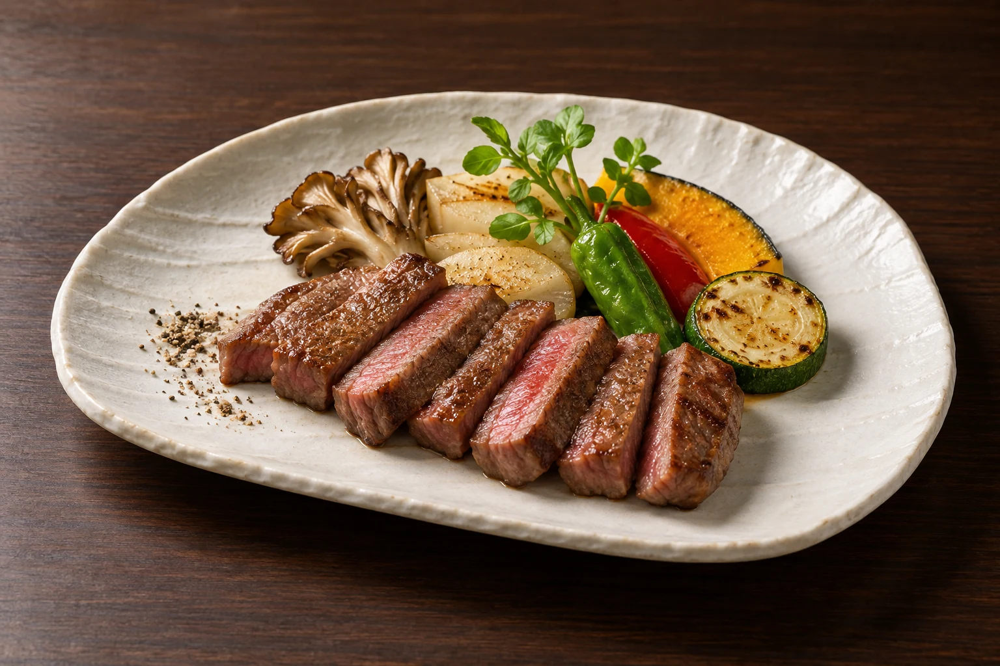
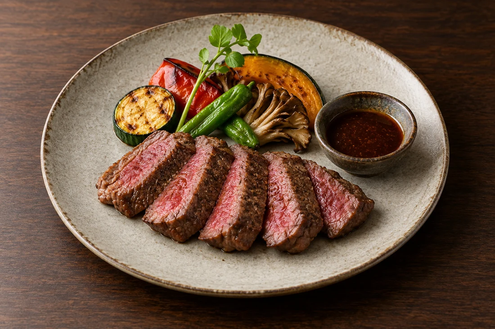
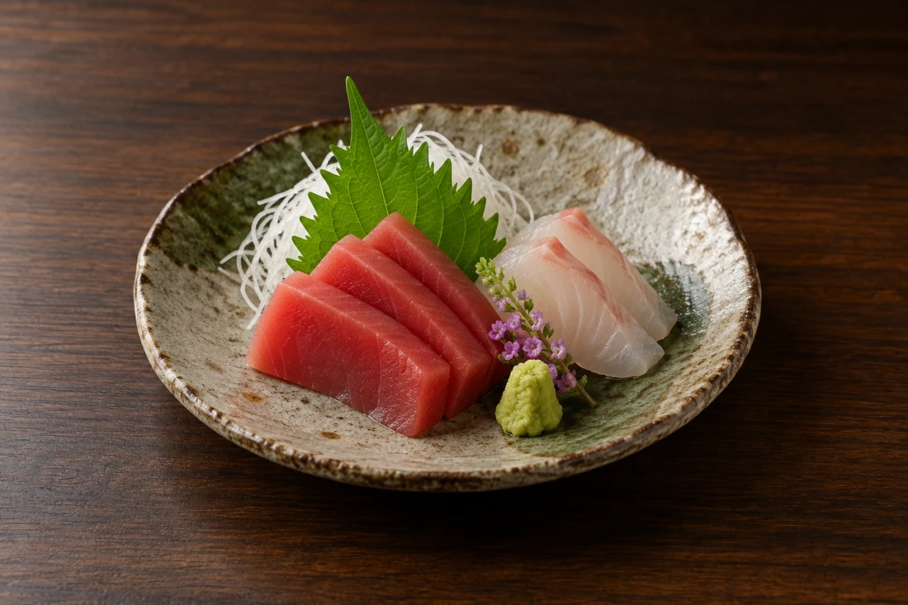
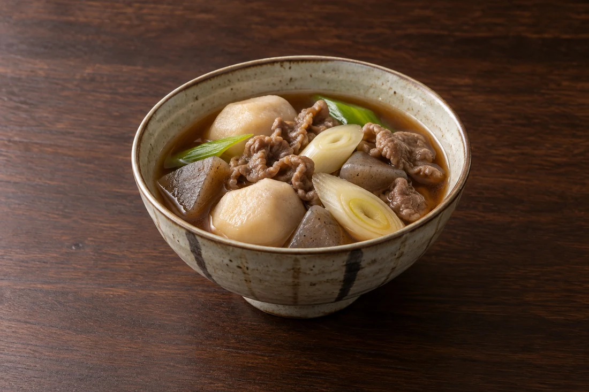
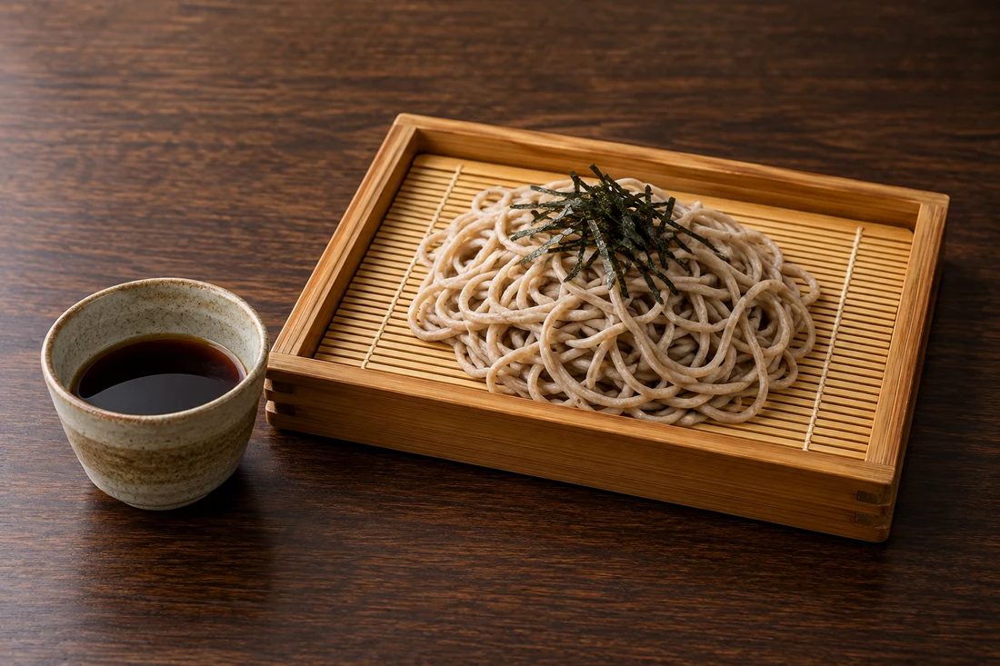

01
竹かご膳
小鉢やお造りを、竹かごに集めたお昼の膳。
4,300円（税金・サービス料込み）
山形駅直結 / ホテルメトロポリタン山形 2F
山形の恵みを味わう日本料理と、
目の前で焼き上げる銘柄牛。
大切な方と、心ほどけるひとときを。

目の前で焼き上げる、鉄板焼の楽しみ。
日本料理と鉄板焼
四季を感じる日本料理と、山形牛・米沢牛を味わう鉄板焼。
ご会食から、旅の食事、お祝いまで。
山形ならではの味をごゆっくり。
季節や仕入れにより料理の内容・器は変わります。
TEPPANYAKI / 鉄板焼
山形牛・米沢牛を、お好みの部位で。
料理人が目の前の鉄板で仕上げるひとときを。

山形牛サーロイン90g 8,500円
米沢牛サーロイン90g 9,500円
鉄板焼ランチは土日祝のみ。料金の詳細は店舗へご確認ください。

季節の味わいを、ひと皿ずつ。
YAMAGATA / 山形を味わう

山形の郷土料理を、あたたかく。

山形らしい麺の味わいも。
料理は一例です。提供状況・献立は事前にお確かめください。
ご利用の前に
ご希望の日時・人数、お席やお料理について
お電話でご相談ください。
食物アレルギーやお苦手な食材は事前にお知らせください。対応の可否は店舗にご確認ください。
ランチ・ディナーとも事前のご予約をおすすめしています。ご希望の日時や人数をお電話または公式サイトからご確認ください。
ランチは11:30〜14:00、ディナーは17:00〜21:00（L.O.20:30）。日本料理の昼・夜は水曜休、鉄板焼ランチは土日祝のみです。祝日の扱いはお問い合わせください。
個室のご用意があります。人数・用途・室料などは予約時に店舗へご相談ください。
ホテル駐車場の利用条件についてはご予約時にご確認ください。
ACCESS / 店舗案内
営業日・時間は変更になる場合があります。お出かけ前にご確認ください。
Google マップを開く地図から経路をご確認いただけます。
山形駅直結 / ホテルメトロポリタン山形 2F